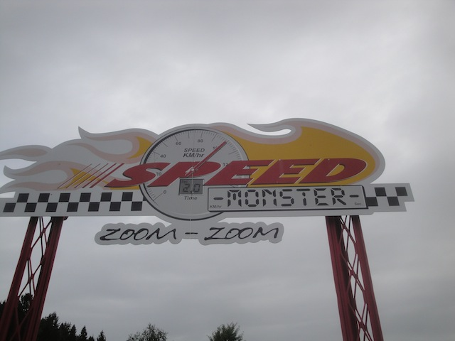
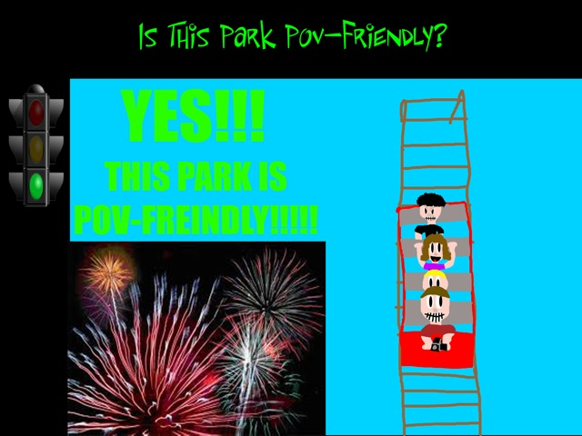

| |
Tusenfryd Review

Tusenfryd is a fun amusement park, located right on the outskirts of Oslo. It's a fun park, though it's far from the best amusement park and there are many parks that are better in Europe, such as Liseberg in neighboring Sweden. I'm not exactly sure what sort of reputation that Tusenfryd has in the roller coaster community. On the one hand, I've heard some people complain about the park and say that the park is essentially the Six Flags of Europe. And that's not fair. This park is better than the bad Six Flags parks. I can think of many parks worse than this. But at the same time, I can see where the critisims come from. So I guess you could say that my thoughts on the park are...middle of the road. I'm not a huge fan, but it's still a fun park. Speed Monster and Thunder Coaster are both very fun roller coasters. But honestly, there's not exactly anything else that stands out otherwise. The flat rides are fun, but they kind of...feel like they were bought from a store catalog. OK, that's a little harsh. But none of the flats screamed "TUSENFRYD!!" to me. The water rides are fun, but again predictable. And while I have heard people praise their dark ride, and it is fun, it's also far from the best (but I'll discuss that in the dark ride section). And I will admit that the clinetelle wasn't exactly the best. It did seem like a place to drop off your teens while your parents are out working in Oslo. So I get the Six Flags comparison. But who knows. Maybe the day I hit it just wasn't the best day for the park. And as I've said before. It's still a fun park. There's just many other better parks throughout Europe.
Rollercoasters
There is a link to a review of all the Rollercoasters at Tusenfryd.
Top Coasters
Speed Monster Review

Thunder Coaster Review

Mediocre Coasters
Loopen Review

Kiddy Coasters
Western Expressen Review

Kiddy Kiddy Coasters
Teeny Weeny Review

Flat Rides
Here are the reviews of all the Flat Rides at Tusenfryd. And like I said earlier, the flat ride collection at Tusenfryd isn't that good. It almost feels like they just plucked everything from a flat ride catalog. But that doesn't mean that they have bad flat rides. Case in point, let's go to their best flat ride. Spin Spider. This is another one of those Zamperla Giant Frisbees. And let me tell you. These things are awesome. If you liked the Huss Giant Frisbees, you'll like the Zamperla ones. They're just as good. Hopefully they can continue where Huss left off as these rides are awesome and Huss isn't around to make them anymore. So yeah. That's awesome. The rest of the flat rides are just OK. There's the Japp Space Shot. It's all right. Nothing wrong with it, but it also doesn't have that great a program. People mainly talk about it because it's sponsered by Japp. Apparently it's a popular chocolate bar in Norway. Curious to try it sometime. But the Space Shot is just average. They also have a pirate ship, some chairswings, bumper cars, and a carousel.
 These things are awesome.
These things are awesome.
Dark Rides
All right. Tusenfryd has a couple dark rides that are pretty fun. So I may have been a little harsh earlier in judging all the rides because some of these dark rides are fun rides. Just...not brilliant. Let's first talk about Thor's Hammer. This is an intersting dark ride. It's a lot of fun and it does have some good movement to it. There's nothing really wrong with the ride. The only problem is that other people sometimes compare this ride to Spiderman. No. Just no. It's a fun ride and all, but is this thing on par with Spiderman or something like Transformers? F*CK NO!!!! Plus, the story isn't that good. Still a fun ride, I just found it to be very overrated. Then there's Nightmare. This is some sort of...shooting game or dark ride. The point is, I really enjoyed this ride. Honestly, I prefered it to Thor's Hammer. I'm not even sure what it is. It's some sort of shooting ride, with some sort of horror theme, and I'm not even sure what the theme is...other than Nightmare. But it's a lot of fun and I definetly recommend checking it out when visiting Tusenfryd.
I don't know what I'm shooting. All I know is that the seats move, it's themed to something scary, and I like it. =)
Water Rides
OK. I didn't really check out the water ride collection at Tusenfryd. The one water ride I managed to do was Super Splash. Now some of you may be wondering why this is in the water ride section and not the coaster section with its own review. Simple. Because this does not count as a credit. IT DOESN'T COUNT!!! I know some water coasters count, but this is just a dip before the drop and a bump after the drop before splashing. Not enough to justify calling this thing a credit. Is your credit so low that you have to count this just to boost up the numbers? Sad and pathetic! You don't boost your count by stretching the credit definition to include water rides! You boost it by whoring yourself out on Teeny Weeny! =P And don't get me wrong. It's a fun ride. These shoot the chutes are fun and all. And then when you add in the bump, it makes it more fun. But still not a credit. They also have a rapids and a log flume here. I might've done either of them if it wasn't a cool day in freaking Norway. But from seeing photos, they did look like fun rides that I just might try if I get back.
Sorry whores. Not a credit.
Dining
The dining at Tusenfryd is pretty good. They served us a nice wide variety of food when we visited the park. I mean, it's not often that you get to eat tacos in Norway. =P OK, I'm sure there are some good places to get Mexican Food in Oslo. I'm sure they have multicultural food. Hell, I just googled it out of curiosity. And I was right! Wow. What a shocker that they have Mexican food in a major city. Now I'm pretty picky when it comes to Mexican Food since I live in SoCal and am spoiled by good Mexican Food (Yes. Someone from SoCal is critiquing a theme park in Norway. Hey, I'm a theme park critic). So there's much better Mexican Food. But it's still good for what it is. I liked it. Plus, they also served us pasta, pizza, and crepes. Now crepes are good. I want more parks to serve crepes. Seriously, that sh*t is good.
 Norwegian Tacos (This dude has moaned). =P
Norwegian Tacos (This dude has moaned). =P
Theming and Other Attractions
Here are the reviews of all the other stuff at Tusenfryd. As far as theming goes, there's essentially none. There's about as much theming as you'd expect in a typical amusement park. It's not a theme park. But I will give the park this. It's got a GREAT setting. It's built on top of a hillside, so just a warning. You're going to be climbing a lot of hills. So if you're out of shape, it might be a challenge getting up the hill over and over again. But the view from the park is just great. It's just nestled right in the woods of Norway. So expect to see it on our Top 10 Park Settings List. As for other stuff to do, there's not a whole lot. The most I can think of is this sort of troll walk through. I know I called it an obstacle course without a single obstacle. But I think I was judging it for something it's not. Which makes a lot more sense. That's all I noticed. But apparently, there's also some slides. Oh, and they have seasonal vollyball here. That's kind of unique. I completely forgot about it, and I do live by the beach. I can play beach vollyball here, but it's something cool for the park. And I'm sure there's more random fun crap scattered around the park. =)
In Conclusion
Tusenfryd is a fun theme park. Yeah. The park is not perfect and definetly has some flaws. It could use some more rides, and the clinetelle can be annoying at times with it being crowded with teens that seem like they just got dropped off to not annoy their parents. But screw it! It's a really fun park. It has two really fun coasters with Speed Monster and Thunder Coaster packing a nice punch. It has some fun water rides, a couple of intersting dark rides including one weird shooting theater dark ride that's a lot of fun. Lots of other random fun, and all with a great setting. Seriously, I love the setting on the hill that this park has. I would say that I think Tusenfryd could use another big stand out attraction. Perhaps in the spot where Loopen is currently standing. But yeah. I know Tusenfryd can sometimes get crap for the flaws that I've mentioned, and when there are other parks in nearby countries that are some of the best, it can be easy to look down on Tusenfryd. But hey. It is the only park in Norway (that isn't some sort of credit whoring stop) and it is a lot of fun. Definetly give it a visit when you're visiting Oslo.
Enthusiast FAQs.
*Are there kiddy coaster restrictions? - Nope. You can ride the kiddy coaster here.

Tips
*Get plenty of rides on Speed Monster and Thunder Coaster
*Be in shape. You're going to be going up and down a lot of hills
*Try and go on a weekday or not in summer. The park can get crowded.
*Have Fun!!!!
Theme Park Category:
Amusement Park
Location
Vintenbro, Oslo, Norway
Last Day Visited
June 21, 2014
Video
I don't have enough footage for a Tusenfryd video. At least not a good one.
Complete Update List
2014
TPR's Scandinavia Trip
Here's a link to the parks website.
Home
|